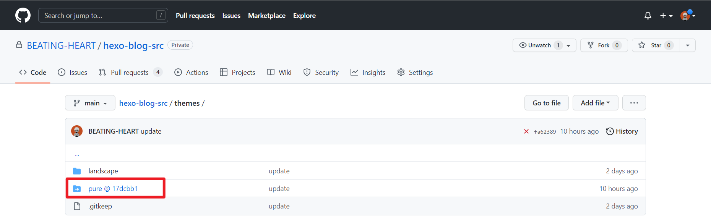
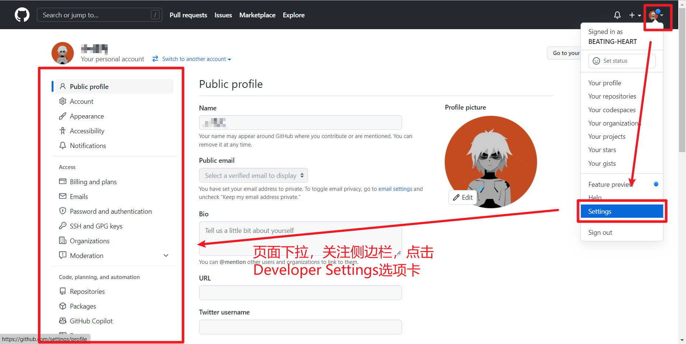
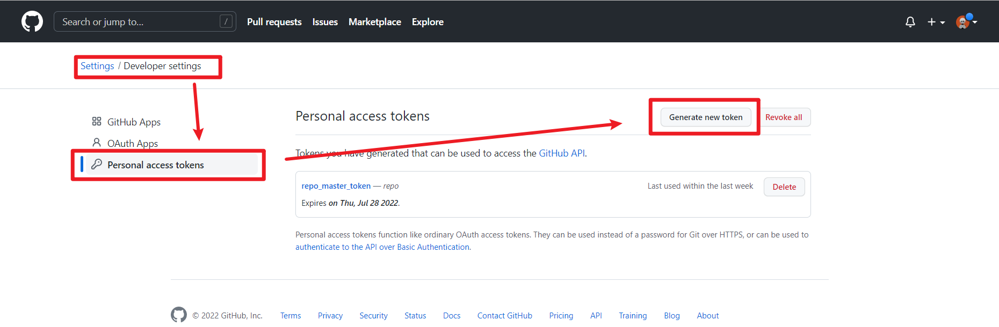
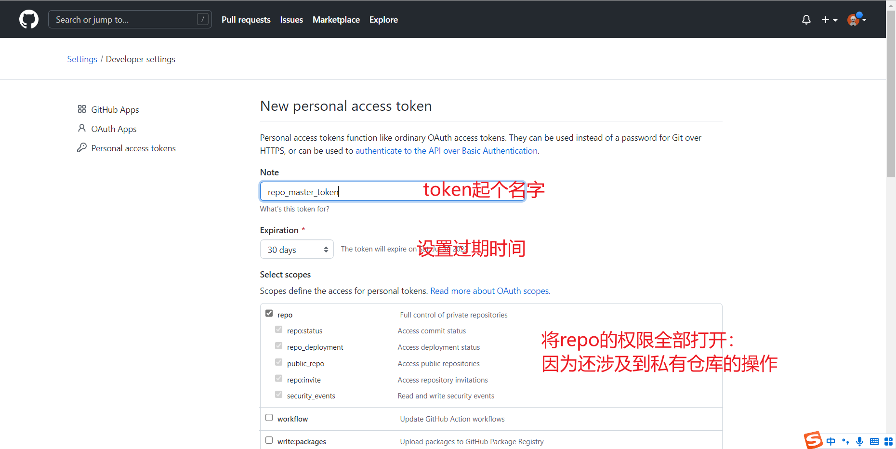
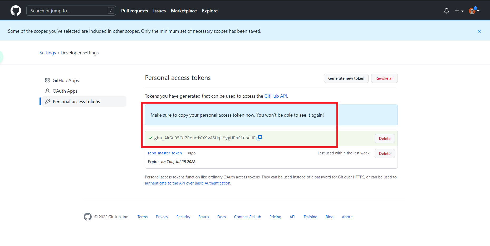
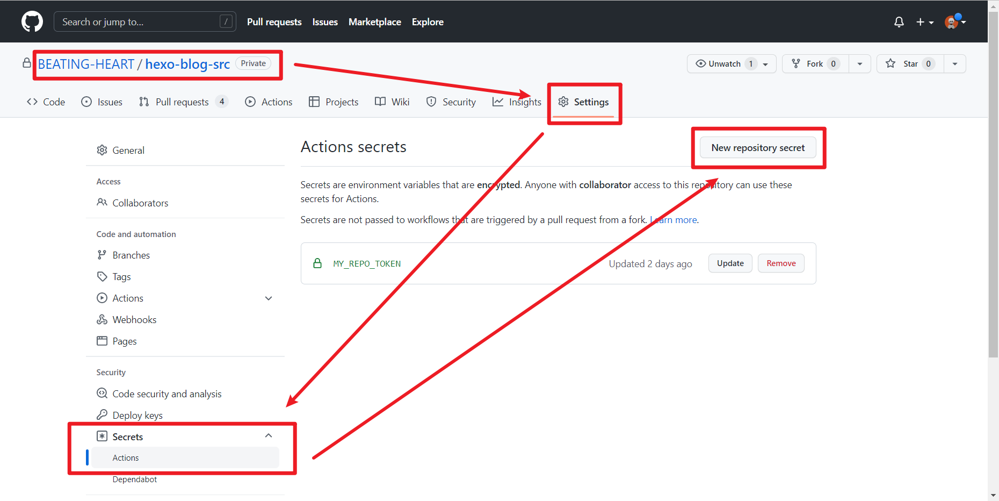
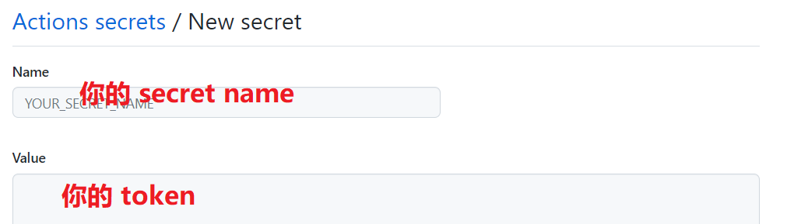

# 背景
前述的 Hexo 博客方案的运行模式是：本地写作、本地编译、远端部署。
一旦本地的博客环境受到破坏，那么博客源文件就会丢失。
所以妥善管理源代码就是十分必要的。
但由于源代码中，引入了各种插件，存放着不少 appid 和 appkey 。这些信息不合适公开存放在 github 的 public 仓库里。
如今比较推荐的方案是：
- 用
github私有仓库存储博客源码 - 配置
github action监听博客源码仓库的push事件 - 当
push事件触发时，github action自动对博客源码仓库进行编译 - 编译结果推送到正式博客公开仓库
不论使用 github page 部署博客，还是使用前述的 vercel 部署博客，都建议这样配置自己的 Hexo 博客。
当然，如果使用 vercel 的话，可以将自己的私有仓库直接授权给 vercel ，这样可以免去使用 github action 的麻烦，在 vercel 上选择 Hexo 模板，剩下的就交给 vercel 了。
# 设置 Github Action
# 代码仓库准备
首先新建私有的博客源代码仓库，命名随意。比如 hexo-blog-src
博客发布的公开仓库要么是 你的github用户名.github.io （假如使用 github page 托管），要么是自定义的一个仓库（不论公开或私有，假如使用 vercel 托管）
在本地，使用 git 工具，连接 hexo-blog-src 仓库（不必上传 node_modules 文件夹）
# 使用 git 的 submodule 管理 hexo 主题
参考文档：为 Hexo 博客更换主题 - 知乎 (zhihu.com)
前文，在安装 pure 主题时，使用的命令为：
git clone https://github.com/cofess/hexo-theme-pure.git themes/pure |
产生了一个问题：
用
git clone是把一个独立的仓库克隆到我们的的Hexo源码中，但同时，我们的Hexo源码也是一个仓库，所以两个仓库产生了父子关系。即 Pure 主题仓库成为了我们Hexo主仓库下的一个独立子仓库但在
git的设计上，父仓库不会对子仓库进行管理。这样就违背了我们用Git进行Hexo博客版本控制的初衷。可以删除
pure项目下的.git文件，把themes/pure变成一个普通的目录，这样就取消了父子仓库关系。但是如果后续主题作者有更新，就不能直接用git pull拉取更新，而是需要手动安装，覆盖原来的文件，重新配置主题，不易维护。
当我们进行 git add * 的时候， Git 会报错
warning: adding embedded git repository: themes/hexo-theme-pure | |
hint: You've added another git repository inside your current repository. | |
hint: Clones of the outer repository will not contain the contents of | |
hint: the embedded repository and will not know how to obtain it. | |
hint: If you meant to add a submodule, use: | |
hint: | |
hint: git submodule add <url> themes/hexo-theme-pure | |
hint: | |
hint: If you added this path by mistake, you can remove it from the | |
hint: index with: | |
hint: | |
hint: git rm --cached themes/hexo-theme-pure | |
hint: | |
hint: See "git help submodule" for more information. |
如果强行 push ，在 GitHub 上会显示子模块图标，但是不知道这个模块仓库所在的 url ，因此在 GitHub 上无法打开这个文件夹。
解决方案：
- 好在 Git 提供了子模块 submodule 功能，可以优雅地避免上面的问题。它允许我们将一个 Git 仓库作为另一个 Git 仓库的子目录，同时还保持提交的独立。
但是，直接在终端输入如下的代码，仍然是不妥当的
git submodule add https://github.com/cofess/hexo-theme-pure.git themes/pure |
为什么呢？其实这样子，在我们本地修改和使用主题的时候是没有问题的
但是当我们要把修改提交到 GitHub 时，会导致我们把自己的文件，提交到主题原作者的仓库去，这显然是不合适的（也提交不上去，没有权限）
因此，下载主题的正确操作流程应该是这样的：
- 在 GitHub 上，把原作者的主题 fork 到我们自己的仓库中
- 运行以下命令，把 Pure 主题添加为我们博客的子模块
git submodule add https://github.com/你的Github用户名/hexo-theme-pure.git themes/pure |
成功添加子模块后，目录下会生成 .gitmodules 文件，再次运行 git add * 添加 .gitmodule 文件和子模块文件夹。此时不会报错，随后依次运行 git commit -m "your message" 和 git push 命令提交更改。
或使用
Git的图形界面客户端，比如Github Desktop或SourceTree等
此时， Github 界面上显示如图。

可以看到， pure 文件夹已经成为蓝色。然后显示了 @17dcbb1 的字样。实际上 @17dcbb1 是 pure 仓库里最新提交记录的 hash 值。
如果点击这个链接，会跳转到之前从 cofess/hexo-theme-pure 仓库 fork 过来的仓库 BEATING-HEART/hexo-theme-pure 中。
可以类比 C 语言中的指针来理解
# 配置 Github Token
参考文档：通过 GitHub Actions 实现私有仓库的免费 Github Pages 部署 - 掘金 (juejin.cn)
首先，配置个人 github token
有的教程也会使用 ssh-keygen 命令生成密钥对。此处我们采用 github token 的方式管理仓库的访问权限。

进入 developer settings 配置界面后，选择 personal access token 选项卡，点击 generate new tokens 按钮，添加新 token

然后跳转到如图所示界面，按照下图配置即可。

其中，
token命名随意，没有特殊要求。过期时间可以选择永不过期。由于还涉及到私有仓库，所以必须要把token所有repo相关的权限全部打开。
最后会生成这样的一个 token ，需要妥善处理，做好复制（如图， token 只会显示这一次）。为保密，不建议保存在本地或其他任何地方。

将这个 token 复制下来，部署到 hexo-blog-src 仓库中去。
进入 hexo-blog-src 仓库，在 settings 中选择 secret 选项卡，并添加 repository secret

将刚才复制的内容，填写到弹出页面的 Value 字段中，并命名（可任意命名）例如 MY_REPO_TOKEN 。

# 编写 Github Action 代码
参考文档：[用 GitHub Actions 自动部署 Hexo | 老苏的 blog (laosu.ml)](https://laosu.ml/2022/01/24 / 用 GitHub Actions 自动部署 Hexo)
在本地的 git 仓库根目录，新建文件 .github/workflows/hexo-blog-deployer.yml 文件。
文件名实际上是任意的。但文件格式必须是
yml格式。文件目录不可以改变，必须在.github/workflows文件夹下
name: Deploy | |
on: [push] | |
env: # 根据自己情况修改 | |
GIT_USER: BEATING-HEART | |
GIT_EMAIL: beating_heart@yeah.net | |
GITHUB_REPO: BEATING-HEART/hexo-blog | |
GITHUB_REOP_BRANCH: main | |
jobs: | |
build: | |
runs-on: ubuntu-latest | |
name: A job to deploy blog. | |
steps: | |
- name: Checkout | |
uses: actions/checkout@v3 | |
with: | |
token: $<!--swig0--> | |
# 这个就是刚刚添加的secret（也就是前面生成的personal access token） | |
# 此处 $ 的格式就是环境变量的格式，下同 | |
# 如果不加token字段，会使用默认的token，但不能访问对应的submodule | |
submodules: true # Checkout private submodules(themes or something else). | |
- name: Setup-Node | |
uses: actions/setup-node@v3 | |
with: | |
node-version: '16' | |
cache: 'npm' | |
cache-dependency-path: '**/package-lock.json' | |
# setup-node 的时候，会根据 package-lock.json 来安装依赖 | |
# 所以 package-lock.json 这个文件一定要提交到 github 上去 | |
- run: npm ci # npm ci 命令，多用于自动化平台。与 npm install 功能类似，也有部分区别。 | |
- name: Hexo clean & generate | |
run: | | |
./node_modules/hexo/bin/hexo clean | |
./node_modules/hexo/bin/hexo generate | |
echo -e "\033[33m [success] hexo clean & generate finished \033[0m" | |
# 实际上，刚开始的时候，直接运行的 hexo clean 结果报错没找到目录或文件。 | |
# 后来尝试了很多，比如使用 npm config get prefix 找到 npm 目录，然后寻找 hexo。但都失败了。 | |
# 最终使用 ls . 命令列出了当前文件夹下的文件目录，才在 node_modules 文件夹中找到 hexo | |
# 上面 echo 命令里面，控制了文字颜色为黄色。 | |
- name: Hexo deploy | |
run: | | |
cd ./public | |
git init | |
git config user.name "$" | |
git config user.email "$@users.noreply.github.com" | |
git remote add origin "https://$@github.com/$.git" | |
# 这里使用了github的token验证功能。是往博客正式仓库中推送内容。 | |
git checkout --orphan $ | |
# orphan，意为孤儿，此命令会生成一个没有历史提交记录的分支。 | |
git add --all | |
echo -e "\033[33m Start Commit \033[0m" | |
git commit --allow-empty -m "Site updated: $(TZ=UTC-8 date +%Y-%m-%d" "%H:%M:%S)" | |
# 按照shell中的时间控制串格式，设置时区为东八区，然后显示年月日时分秒。 | |
echo -e "\033[33m Start Push \033[0m" | |
git push origin "$" --force | |
echo -e "\033[33m Deployment succesfully! \033[0m" |
当仓库发生
push事件时，该action脚本将会自动执行。
${{ xxx }}表示环境变量
env字段中的值，需要根据自己情况修改
# 发布博客，测试部署
在本地编辑文档，然后上传到 hexo-blog-src 仓库，触发 github action ，自动向 hexo-blog 仓库提交代码，随后网站页面自动更新。
# 参考文档
GitHub Actions 入门教程 - 阮一峰的网络日志 (ruanyifeng.com)
用 GitHub Actions 自动部署 Hexo | 老苏的 blog (laosu.ml)
Github Actions: submodule 下公私有仓库授权和通信 - 知乎 (zhihu.com)
actions/checkout: Action for checking out a repo (github.com)
actions/cache: Cache dependencies and build outputs in GitHub Actions
actions/setup-node: Set up your GitHub Actions workflow with a specific version of node.js